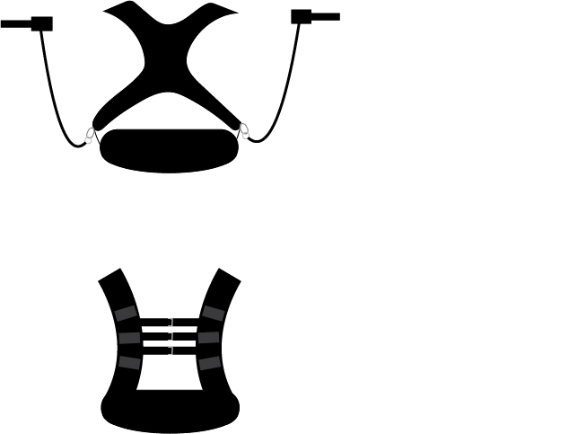

DOCUMENT 01
01 / PROJECT WIP
Running-form vest

01 / FEATUREThis is the main idea for the Sports-Running-Vest Prototype. It is a weighted harness for Track and Field runners in order to maintain running form.
CONCEPT
This combines the form work with resistance training that is acute to a runner's success. The harness itself is compartmentalized into a vest that is placed on the body. This vest contains weight pockets that are weighted to produce resistance. The main feature of the product is its adherence to fixing running form. The focus of the product is to keep the arms swinging in front to back motion that reduces torque to conserve energy loss. By placing the bands between the mid back and wrists there is less rotation across the body for the arms. An alternative way to implement the product (which is not shown) would be to instead wrap the velcro straps around the upper triceps and shorten the resistance band for higher and heavier tension. Both placements reward the natural anti- phase movement in "opposite arm-opposite leg" running technique.
PROCESS
During the start of the race, runners like me may fall under bad habits and swing their arms in front of us to try to create power. This counterintuitively produces torque and causes a loss of energy which entropically wastes energy that can be used to generate faster times. I'm currently prototyping an actual product that I can test on teammates at my club "Moore Elite Track Club"
DOCUMENT 02
Concept Art 2
PROJECT STATUS01 / CURRENT
Work in progress
Upcoming prototype to be finished in Fall 2026
02 / HANDS-ON DESIGN
Hands-on design
As I attempt to step into industrial design, I've gained knowledge in sewing. Here are some personal projects I've recently worked on.

Handbag with asymmetric pocket.
I used handbag fabric to make a lightweight personal use bag. I cut, sewed, and constructed the band, bag, and pockets.

Pajama Shorts
I used lightweight fabric to cut sew and construct a wearable apperal item. I made the pants, waistband, and drawstrings.
03 / OTHER ARTWORK
Other artwork

A-Boogie-Wit-Da-Hoodie Painted Profile
[Paint and Canvas Medium]

Kanye Bear Mediums of Artwork
[Pencil and Glue Medium]

Running Photo Artwork
[Paint Medium]